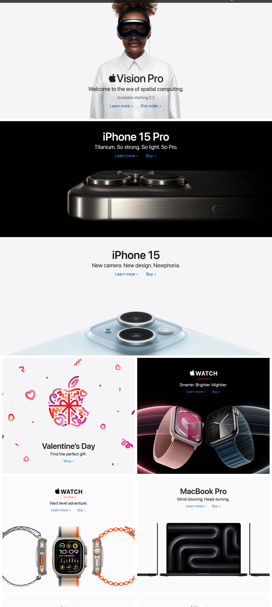
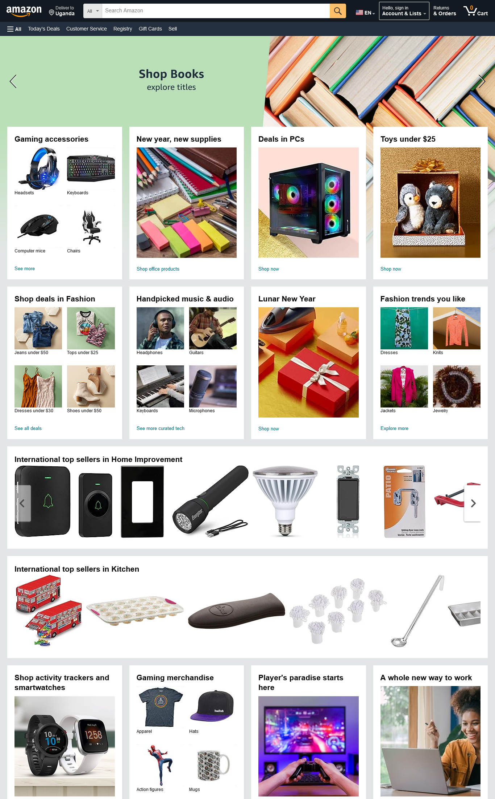
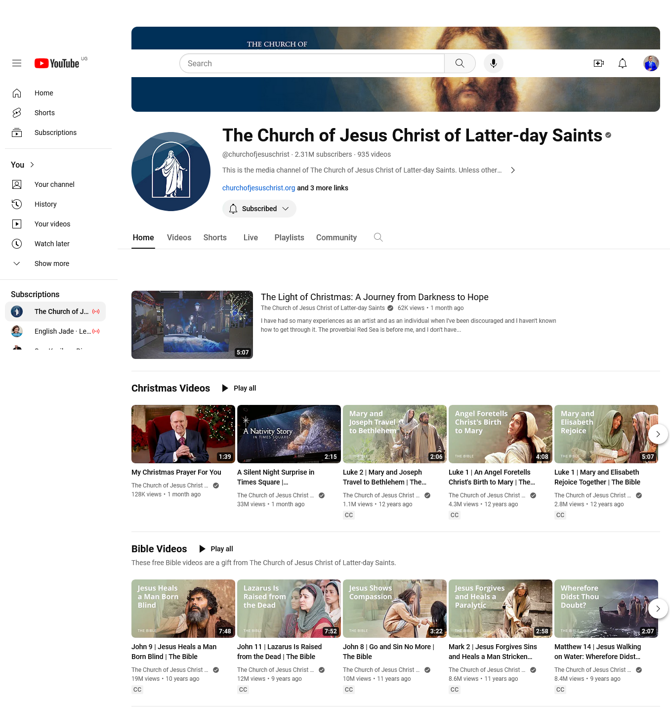

Visual Hierarchy
Apple
Website: Apple
Apple's homepage is a good example of visual hierarchy. The main product, promotion, or announcement is typically presented prominently at the top, drawing the user's attention first.

Hick's Law
Amazon
Website: Amazon
Amazon's homepage minimizes choices with clear navigation options and personalized recommendations, reducing decision time for users.

Fitt's Law
Youtube
Website: YouTube
YouTube's interface demonstrates Fitt's Law by featuring large, easily clickable buttons for primary actions such as play, pause, and volume control. The red "Subscribe" button is also prominently placed, making it easy for users to subscribe to channels. The design ensures that users can quickly and accurately interact with these key elements, aligning with Fitt's Law principles for efficient interaction
